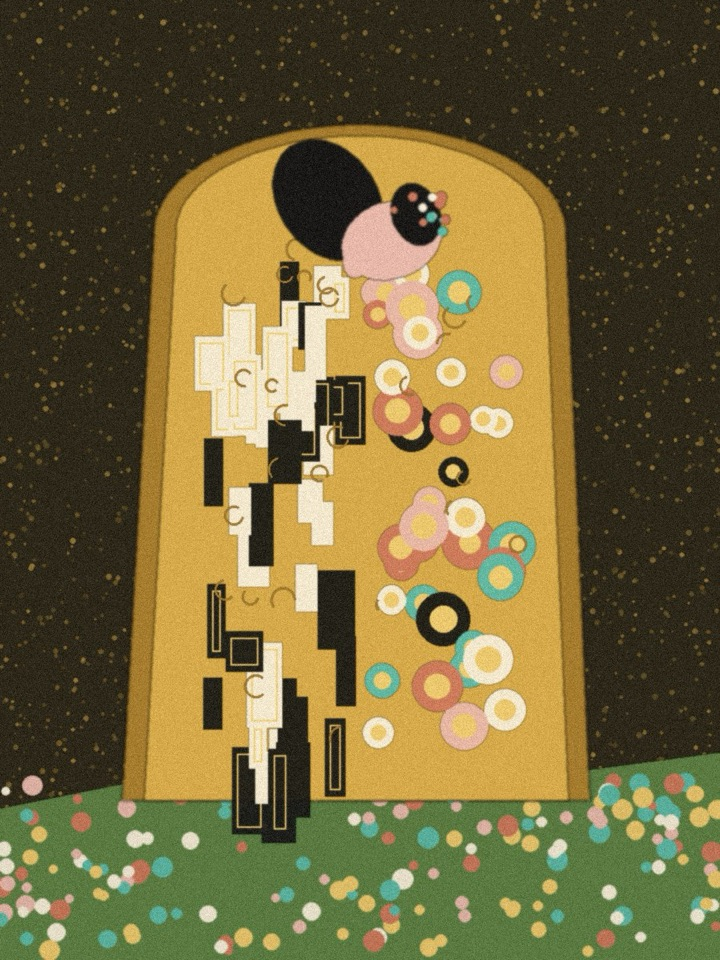

How I think
Design is a decision-making discipline. My job is to make the right decisions visible, and the wrong ones impossible to ship.
Two halves of the same practice: how I design AI agents people can trust, and how I lead design so the right calls get made fast.

Designing AI native products users can trust.
Autonomy is a dial, not a switch.
Every action an agent can take gets its own setting: decide, ask, or hand off. Two questions set it. How much does a mistake cost? Can it be undone? Not: what can the model technically do?
Design the handoff before the happy path.
Trust is won or lost the moment an agent says "this isn't mine to decide." I design that moment first: what the renter is told, what the person on the other end receives in Vida, and how fast the loop closes.
If it can't be undone, explain it first.
Reversible steps move fast. Irreversible ones slow down, show their reasoning and wait for a yes. Signatures, payments and anything legal never happen silently.
Operators need a cockpit, not a chat log.
Nobody supervises a portfolio by reading transcripts. Vida leads with what needs a human now, why, and the one action that fixes it.
Every AI state is a design state.
Thinking, confident, uncertain, escalated, completed. Each one looks and reads the same everywhere, so renters and operators always know where things stand.
Process scales teams. Judgment scales impact.
I keep the artefacts that sharpen thinking and drop the ones that only look productive. The aim is confident decisions and fast learning loops.
- Users first, always.
- Data informs. Intuition leads.
- Design is a team sport.
- Constraints breed creativity.
- Ship with intention. Iterate with purpose.
- Accessibility is not optional.
I don't just design screens. I design the conditions for good decisions, for the people on the team and for the agents we ship.